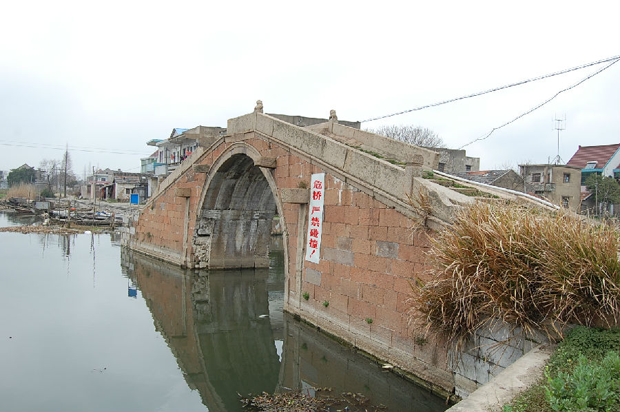

嘉兴市文物保护网 · 市级文物保护点 · 2020-11-09 · 原文

新篁北郭桥位于嘉兴市南湖区凤桥镇新篁社区网船浜，南距新篁大桥约500米，又称八角桥、迎龙桥。清同治三年《竹里述略》卷九载：“康熙乙亥建……嘉庆三年里人重建”为单孔石拱桥，东西横跨青龙港，全长26米，顶宽2.8米，底宽3.86米，拱跨8米，矢高4.2米。拱券用条石纵联并列分节砌筑，桥基由武康石错缝堆砌而成，桥栏板及狮子望柱用金山石砌成，顶盘石中央刻有团花图案，东西两侧各铺设石阶15级。西桥堍落于水中央，呈三角形砌筑、起分水作用，西侧另有一小型石桥与桥身相连。桥身阳刻“迎龙桥”额。有桥联，南为：“秀毓迎龙掉青龙之尾，□□驷马□天马之□”，北边楹联不可辨识。北郭桥造型美观、独特，其三角形分水桥墩在传统石拱桥工艺中较为罕见，是研究我国古代桥梁建筑的重要实物资料，具有较高历史和科学价值。2002年公布为嘉兴市文物保护点。